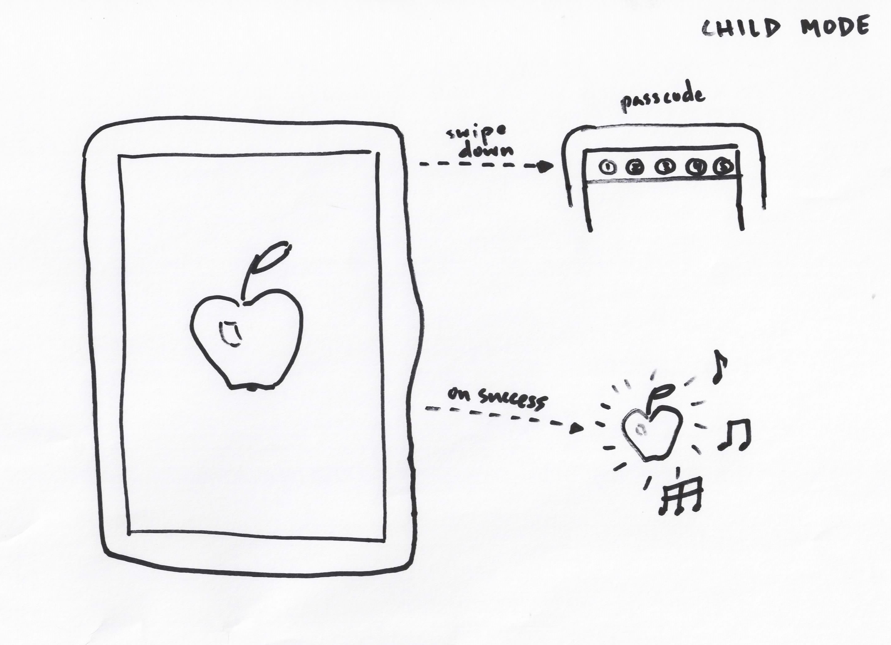
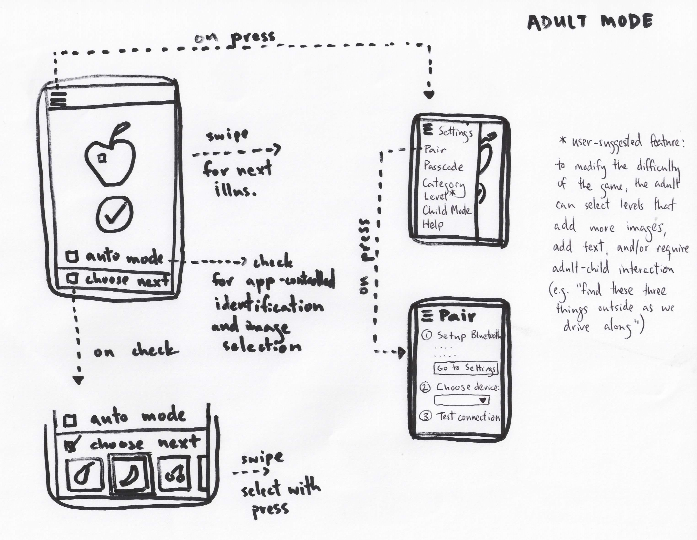

The child will see an illustration and correct identification leads to a success animation; this allows the child to swipe for the next illustration (a swipe down is used by the adult to exit this mode):
In adult mode, the adult sees what the child is seeing and can optionally mark the identification as correct, choose subsequent illustrations, and configure the application (pair using Bluetooth help screen, choose illustration categories, etc.):
